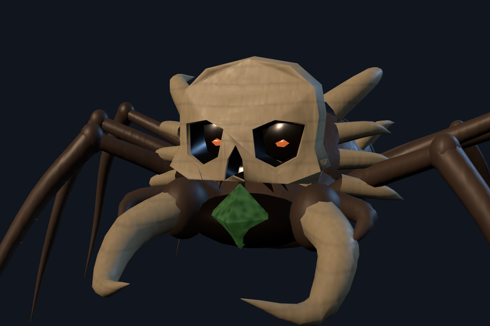
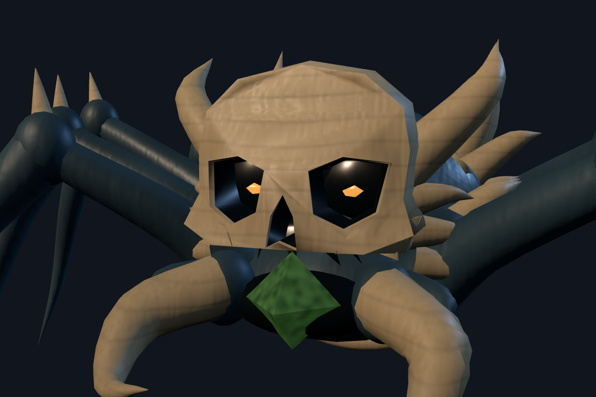

Matched spider crystal proportions
Both crystals now follow the size of their feeding face. Target positions and combat hit radii are unchanged.

Spider I · reduced crystal
Spider II · enlarged, exposed crystalIndividually framed for shape comparison. Full enemy gallery and updated simulation clip